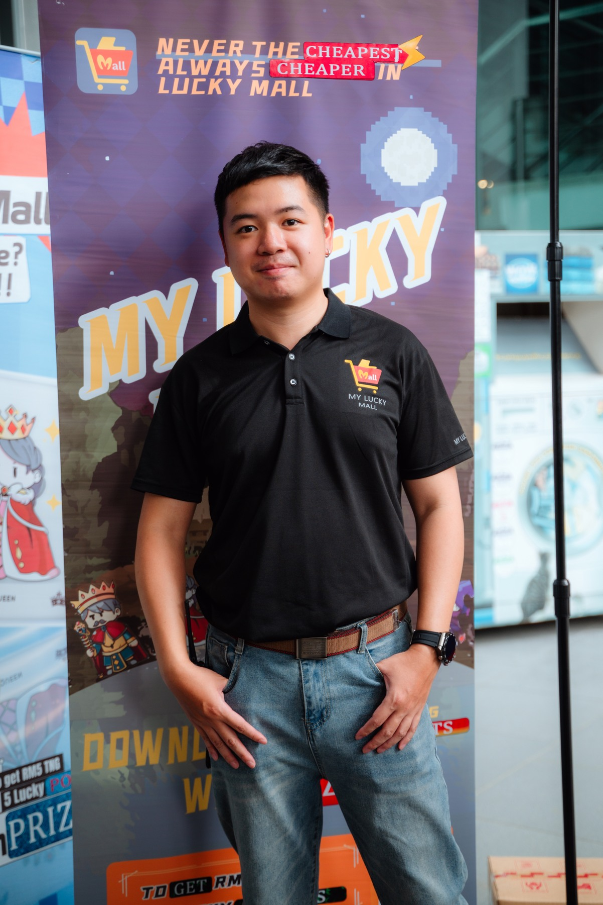
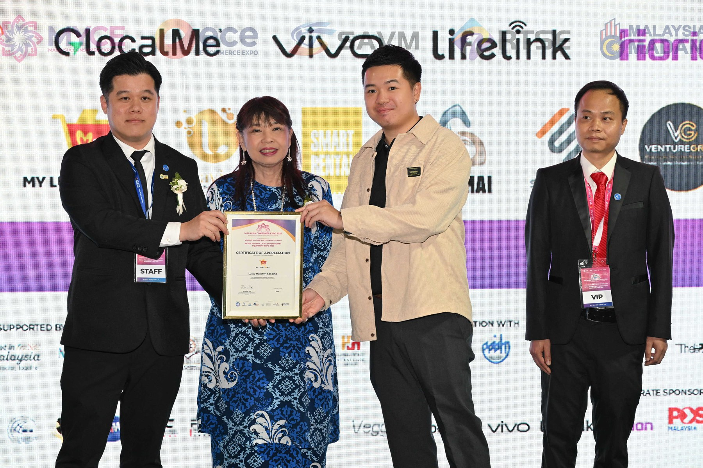
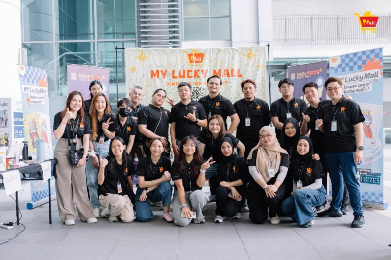
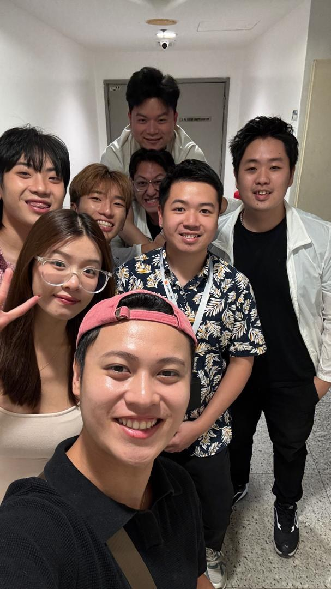
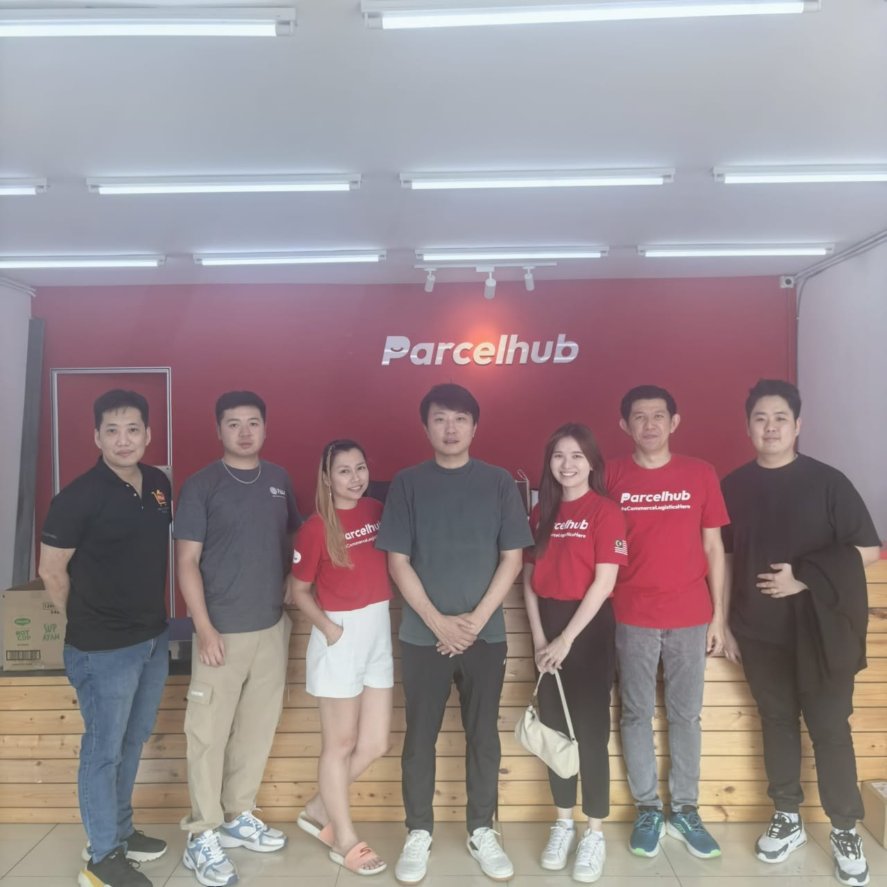
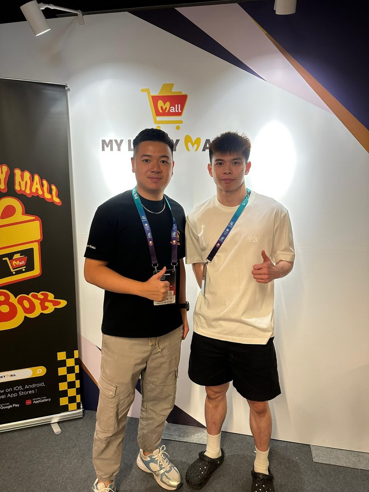
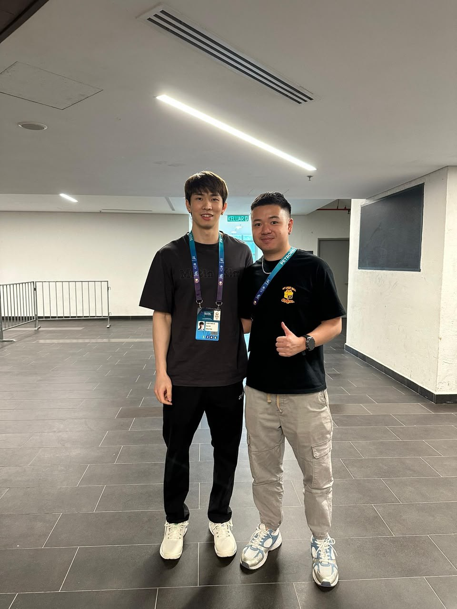
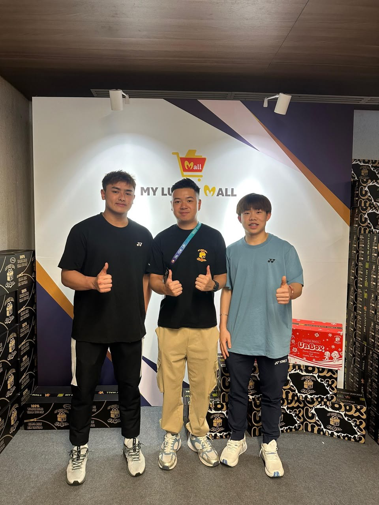

Monthly sales growth, from 10 to 1,500 units.
Sales restructuring & optimisation
A commercially minded operator who turns partnerships, campaigns and digital systems into measurable growth - from the first conversation to the final result.
A growth-focused professional connecting public relations, business development, e-commerce and digital execution across both online and offline channels.

“I build the connective tissue between a commercial idea and the system that makes it deliver.”
Nick combines communication discipline with a hands-on operating model. His experience spans stakeholder engagement, campaign activation, acquisition, performance optimisation, team leadership and product collaboration.
That range makes him especially effective in roles where high-level direction must become a clear execution plan across multiple teams and channels.
A concise view of the commercial and operational outcomes documented across Nick’s current role and portfolio.
A selection of collaboration, activation and university engagement programmes. Each illustrates a bias toward a clearly stated target and measurable outcome.
Commercial programme activated against a unit sales target with a results-led delivery approach.
Partner-facing activation managed to convert engagement into a defined commercial result.
Collaboration delivery with an audience and commercial target built into the programme.
Campus activation securing a high-volume digital acquisition outcome.
Pop-up engagement format converted into measurable new-user acquisition.
Official music-video collaborations for My Lucky Mall, presented here as watchable project evidence.
A career foundation in safety, systems and process control, now expanded into commercial partnerships, communications and digital transformation.
Leading the commercial and communications engine across partnerships, growth campaigns, digital operations and product collaboration.
Developed safety policies and reporting systems, managed investigations and compliance activities, and supported government relationships, training, inspection and safety committees.
Set up 6S, security and closed-management systems; developed KPIs, supported safety asset and budget control, and conducted operational inspection work.
Built safety rules, inspection and monitoring systems, organised training and drills, delivered process compliance reporting and supported property management.
Rotated across finance, HR, administration, marketing, operations and distribution solutions, building a practical understanding of end-to-end business execution.

Stakeholders, partners, creators and operating teams are not a backdrop to results. They are how a commercial programme becomes real.
See field notesA visual record of partner sessions, events and team delivery supporting the wider commercial portfolio.





